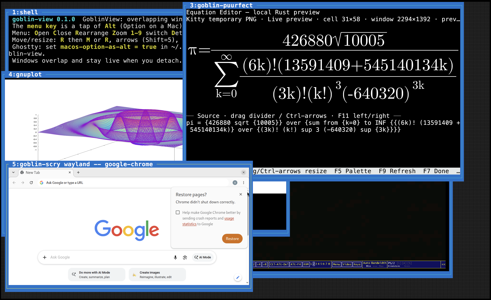

Your windows, your layout.
Move, resize, snap and zoom. Split a window to open another program beside or below it, leaving the rest of your desktop in place. Each half stays independently movable.
A whole desktop in your terminal
Overlapping windows. Sessions that keep running. Kitty graphics and Silkie extensions, all in one terminal.
Named for Odin’s high seat: a place to survey your world. The spirit of DESQview, with a modern terminal underneath.
01 / Your workspace
An editor here. A shell there. A picture wherever you need it. Move, resize, raise and overlap windows on a single terminal desktop.

goblin-scry, alongside a shell. Text and graphics in one overlapping workspace.View full resolution Move, resize, snap and zoom. Split a window to open another program beside or below it, leaving the rest of your desktop in place. Each half stays independently movable.
Each window has its own terminal state and scrollback. Detach from the desktop while shells, editors and long-running jobs carry on.
Attach from multiple terminals. Smaller clients follow the focused window through a viewport; the desktop uses the largest attached size.
02 / Beyond the character cell
Your programs talk to a terminal inside every window. Odin Seat keeps their state separate, translates coordinates and carries supported features through to the terminal you attach from.
Enhanced keyboard input, inline graphics, styled text, clipboard access and file transfer. Image placements move and clip with their windows.
Capability queries, tablet input, gestures, pixel scrolling, display information and frame feedback. Input follows the window where a contact began.
Use a terminal that supports the features you need. Kitty and sixel images are emitted in the host’s format; text-only clients omit images. Silkie extensions are offered when an attached host advertises them. A monochrome mode supports e-paper displays.
03 / Compare multiplexers
A persistent workspace carries more than text. Compare window management, what programs can tell you, Kitty terminal extensions and Silkie support across Odin Seat, tmux, GNU Screen and Zellij.
On smaller screens, scroll the table sideways to compare all four.
| Feature | Odin Seat Kitty + Silkie, per window | tmux 3.8 manual ↗ | GNU Screen Upstream manual ↗ | Zellij Current documentation ↗ |
|---|---|---|---|---|
| The workspace | ||||
| Detach and reattachKeep programs running between visits | Yes | Yes | Yes | Yes |
| Window arrangement | Overlapping desktopMove, resize, raise, split, snap and zoom | Tiled + floating panes | Split regions | Tiled, floating + stacked panes |
| What your programs tell you | ||||
| Desktop notificationsOSC 9, OSC 99 and OSC 777 | YesSent to the host; a click returns to the window | Not listed | Not listed | YesSent to the host as OSC 99 or OSC 9 |
| Program statusOSC 7501: working, blocked, done, failed | YesBadge in each window’s frame; every window’s records sent to the host | Not listed | Not listed | YesSession status sent to the host |
| Progress barsConEmu OSC 9;4 | YesShown as the window’s program status | YesPer pane; sent to hosts that support it | Not listed | Not listed |
| Working directoryOSC 7 and ConEmu OSC 9;9 | YesNew splits open where the program is | YesOSC 7, per pane; sent to hosts that support it | Not listed | YesFocused pane’s directory sent to the host |
| Kitty and terminal capabilities | ||||
| Kitty keyboard protocolEnhanced key reporting and application modes | YesFlags and mode stacks per window | Extended keysCSI u / xterm formats | Not listed | YesHost-dependent option |
| System clipboardOSC 52 copy and read | YesHost relay; replies routed to the window | YesConfigurable copy and read | Not listed | YesReading is opt-in |
| Kitty rich clipboardOSC 5522 | YesHost relay | Not listed | Not listed | Not listed |
| Kitty file transferOSC 5113, in both directions | YesHost relay or built-in transfer dialog | Not listed | Not listed | Not listed |
| Kitty drag and dropOSC 72, with window-relative coordinates | YesProtocol delivery or paste fallback | Not listed | Not listed | Not listed |
| Text sizingOSC 66 | YesScaled layout; plain text on other hosts | Not listed | Not listed | Not listed |
| Multiple cursorsKitty additional cursor protocol | YesTranslated positions; text fallback | Not listed | Not listed | Not listed |
| Kitty graphicsImages stored and placed per window | YesMove, clip, scroll and overlap | PassthroughBypasses the pane model | Not listed | YesTracked per pane |
| Sixel graphics | Yes | YesRequires a Sixel-enabled build | Not listed | Yes |
| Kitty ↔ Sixel translationChild and host can use different image protocols | YesChosen separately for each attached client | Not listed | Not listed | Not listed |
| Silkie capabilities | ||||
| Pen, touch and gesturesPressure, tilt, contact capture and pixel scrolling | YesInput follows its original window | Not listed | Not listed | Not listed |
| Fonts and vector scenesFont roles, scene edits and vector services | YesPer-window state and font namespaces | Not listed | Not listed | Not listed |
| Deep and wide-gamut colour16 bits a channel, Display P3, Rec. 2020 and HDR brightness | YesKept exactly per cell; nearest 8-bit colour for other hosts | 24-bit RGB8 bits a channel | Not listed | Not listed |
| Rich image formatsPalette, indexed colour, packed, 16-bit and HDR10 images | YesConverted for each attached host | Not listed | Not listed | Not listed |
| Display and frame feedbackCapability queries, display information and latency | YesNegotiated with attached hosts | Not listed | Not listed | Not listed |
Read the entries: “Yes” includes features implemented or relayed by the multiplexer; host support and configuration still apply. “Not listed” means native support is not described in the cited upstream documentation. Passthrough lets an application send escapes directly to the host; it does not provide per-window state or clipping.
This is a documentation comparison of selected features, not a runtime compatibility test or an exhaustive protocol checklist. Odin Seat’s entries follow its protocol manual and implementation; competitor entries follow the sources below.
progressbar and osc7 terminal features with the per-pane progress and path formats. Its build configuration defines the Sixel option.man odin-seat-protocols.04 / A familiar rhythm
Run odin-seat to create a session or return to an existing one. The menu is an Alt tap away.
On terminals that swallow an Alt tap, use Ctrl + \. In Ghostty on macOS, set macos-option-as-alt = true so Option reaches the menu.
TAP Alt, RELEASE, THEN…
05 / Make yourself at home
Install with one command on macOS or an APT-based Linux distribution, or build from source with a C++23 compiler, Make and zlib.
The package and command are odin-seat. Check the repository catalog for builds matching your operating system and architecture.
curl -fsSL https://xn--hliskjlf-eza0m.goblinreactor.com/install.sh | shUses Homebrew on macOS, setting it up if needed, or signed APT packages on Linux. Checks the Linux release and architecture against the repository. May ask for administrator privileges. Read the installer ↗
# Add the Goblin Reactor tap
brew tap goblinreactor/tap \
https://brew.goblinreactor.com/homebrew-tap.git
# Install and open your desktop
brew install goblinreactor/tap/odin-seat
odin-seatThe tap includes the command, manual pages and input-method dictionaries. Check available bottles ↗
First, add the signed Goblin Reactor repository for your distribution using its setup instructions.
# After setting up the package repository
sudo apt update
sudo apt install odin-seat
# Open your desktop
odin-seatUse the repository’s instructions for your distribution and architecture. View supported releases ↗
From a current Odin Seat source checkout, run:
make
make test
make install
# The default install prefix is ~/.local
~/.local/bin/odin-seatRequires a C++23 compiler, Make and zlib development headers. Add ~/.local/bin to your PATH to run odin-seat by name.
odin-seat new-window -- htopman odin-seatman odin-seat-protocols